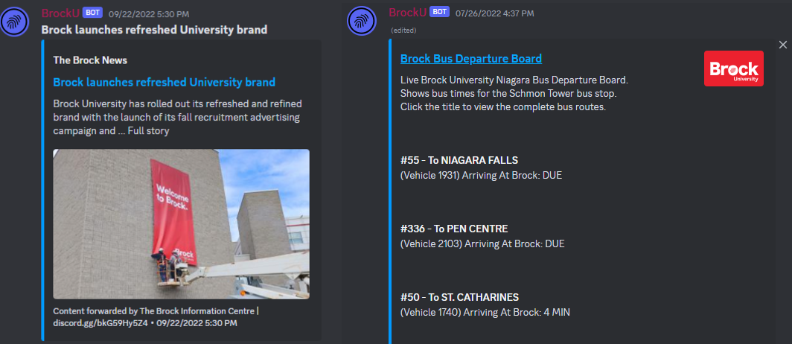

IoT Gym Population Counter

Status: Archived
Tools Used: Raspberry Pi, React.js, Python, HTML, CSS, BluePy, Mosquitto (MQTT Broker)
For this project I have created a website using React.js which displayed whether my small local gym was busy in real time, this allowed me to workout when the gym was quiet and most of the equipment was available. For this project I used a Raspberry Pi Zero (Mini Single Board Computer) which would scan for Bluetooth devices in the gym on a set interval. It did this by utilizing a custom python script I wrote along with the bluepy library. Based on the amount of devices it found the code would strategically filter the results and make an accurate estimate on how many people are at the gym and communicate that using an MQTT broker hosted on my virtual private server to the site.
Note: This project is archived. This means all or parts of this project are no longer functional but some or all parts of it have been saved.